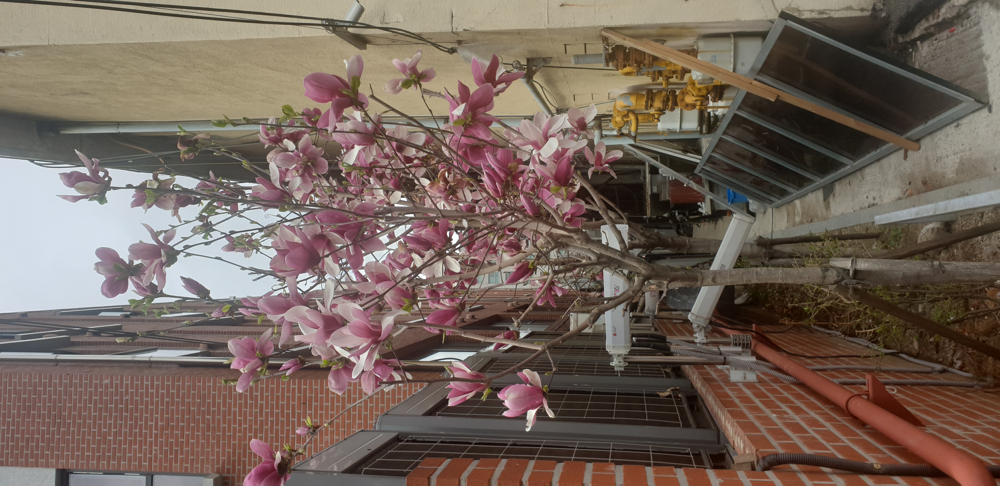

"두 가지 시선으로 바라본 봄의 기록"
나레이션 스크립트: 봄이 발길을 멈추는 곳
(잔잔하고 평화로운 피아노 선율이 흐른다)
우리는 매년 돌아오는 이 계절을 기다립니다. 차가운 겨울 바람이 잦아들고, 세상의 색감이 다시금 선명해지기 시작하는 때. 봄은 우리 곁에 각기 다른 모습으로 찾아옵니다.
(잠시 쉼)
먼저, 하늘을 올려다봅니다. 눈이 부시도록 파란 하늘 위로 몽글몽글한 구름이 덧칠해져 있습니다. 그 아래, 나뭇가지마다 촘촘히 맺힌 하얀 벚꽃 송이들이 바람에 가볍게 몸을 맡깁니다. 나무 너머로 끝없이 펼쳐진 짙푸른 숲은 이제 막 생명력을 얻기 시작한 연둣빛 새싹들과 어우러져 장관을 이룹니다. 어느 길가에 잠시 멈춰 서서 이 평화로운 풍경을 바라보고 있노라면, 가슴 속까지 맑은 공기와 함께 새로운 희망이 차오르는 기분이 듭니다. 그곳은 우리가 흔히 꿈꾸는, 가장 찬란하고 순수한 봄의 얼굴입니다.
(음악의 분위기가 조금 더 차분하면서도 무게감 있게 변한다)
하지만 봄은 그리 화려한 곳에만 머물지 않습니다. 좁고 구석진 도시의 어느 뒷골목. 붉은 벽돌담과 차가운 철제 파이프, 그리고 복잡하게 얽힌 계량기가 가득한 무채색의 공간입니다. 누구도 꽃이 필 거라 기대하지 않았던 이 비좁은 틈새에서도, 봄은 어김없이 자신의 흔적을 남깁니다.
지지대에 몸을 기댄 가느다란 목련 나무 한 그루. 거친 질감의 콘크리트와 대비되는 연분홍빛 꽃잎이 우아하고도 강인하게 피어났습니다. 녹슨 가스관과 투박한 자재들 사이에서 꿋꿋이 꽃망울을 터뜨린 목련은, 비록 화려한 공원처럼 넓은 하늘을 가지지는 못했지만, 그 어느 때보다 빛나는 생명력을 보여줍니다. 삭막한 도심의 일상 속에서 마주친 이 뜻밖의 풍경은, 삶의 고단함 속에서도 아름다움은 피어난다는 조용한 위로를 건냅니다.
(음악이 다시 밝아지며 고조된다)
푸른 들판 위에서 춤추는 벚꽃이든, 좁은 골목길을 밝히는 목련이든. 봄은 모든 곳에서 우리에게 말을 건냅니다. 오늘 당신이 머무는 그곳에도, 분명 아름다운 봄이 숨 쉬고 있을 것입니다.
(음악이 여운을 남기며 천천히 사라진다)
Audio Narration
Listen to the story (Korean)